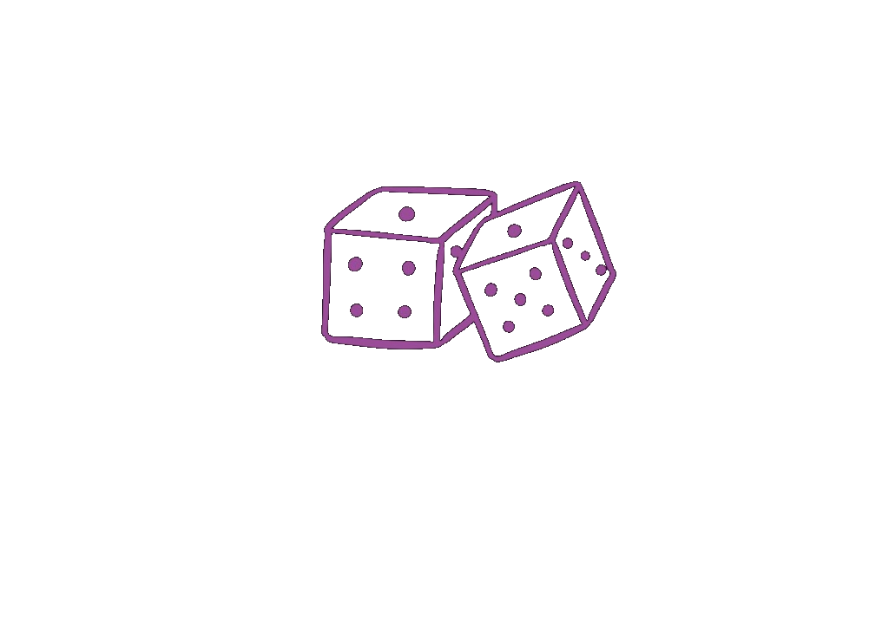
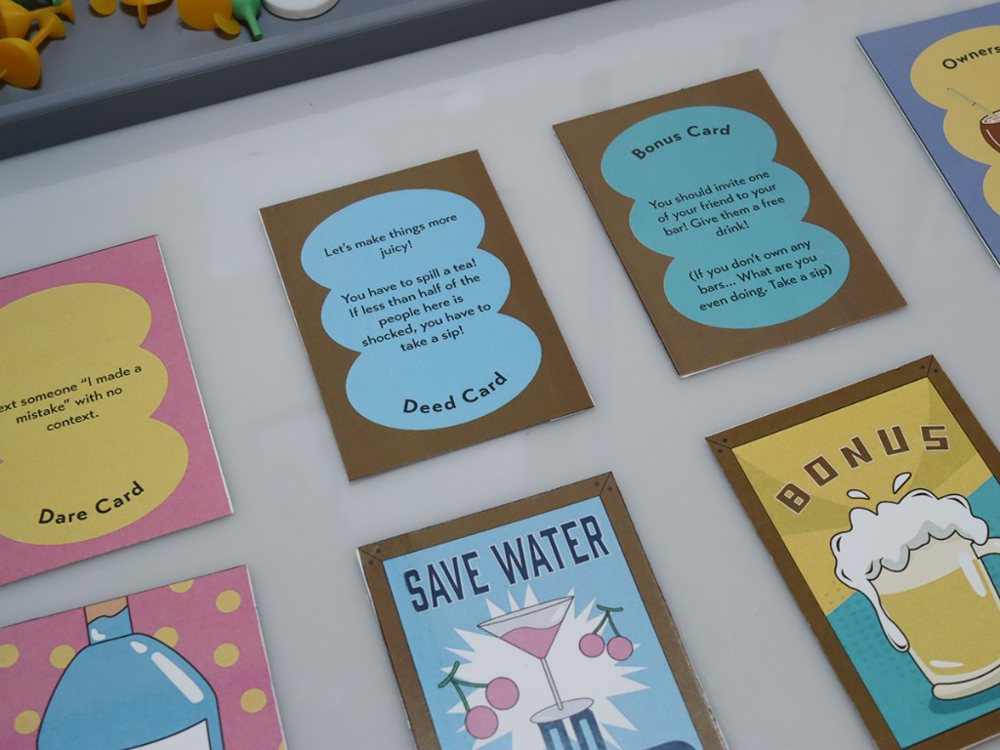
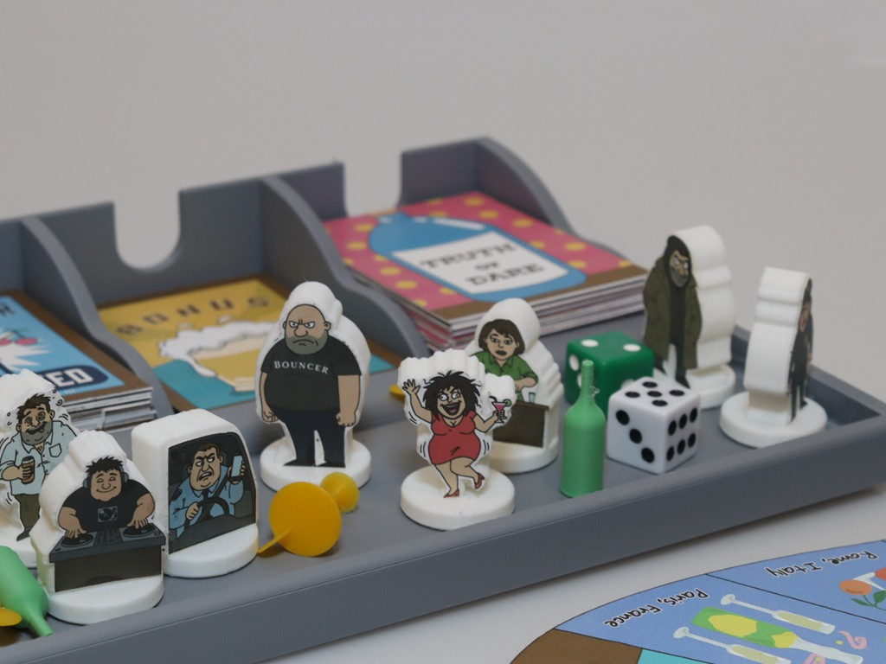
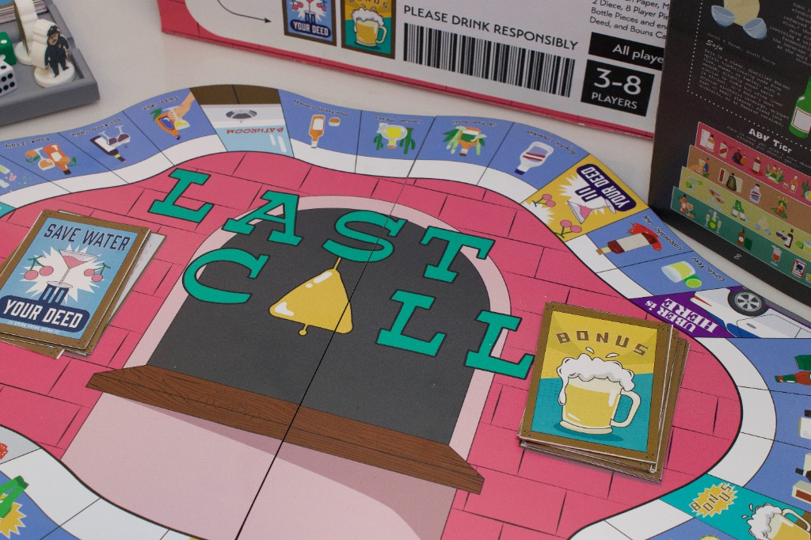
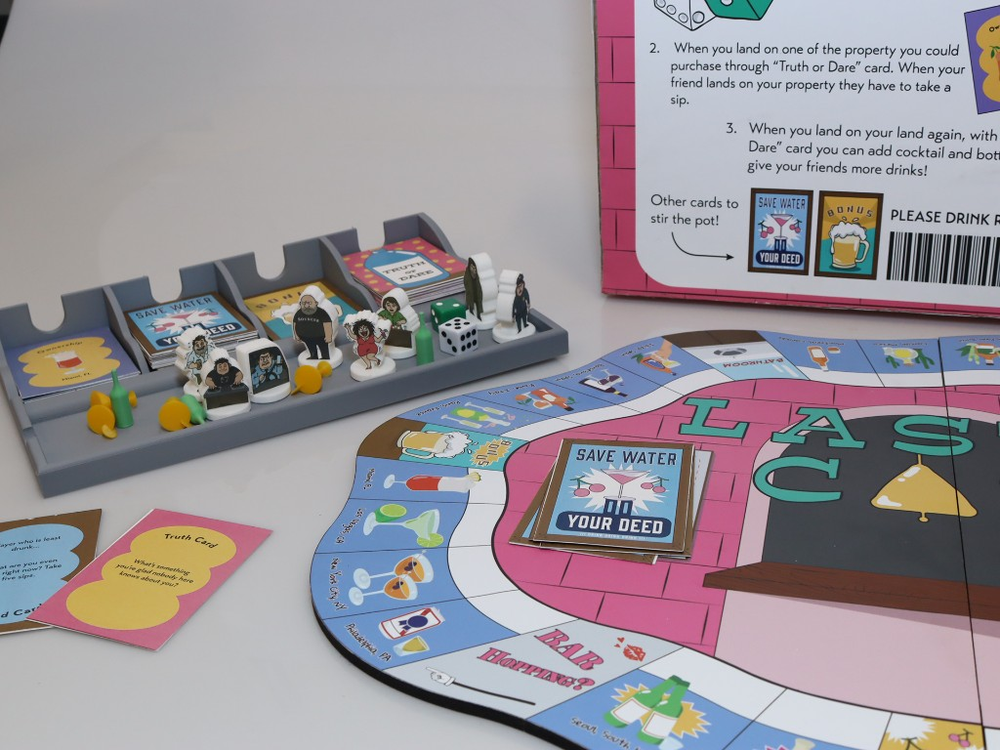

LAST CALL (2026)

Graphic Design | Board Game Design
Tools: Adobe Illustrator, Fusion360, 3D Printer, Laser Cutter
Last Call is a 21+ drinking game inspired by the structure and mechanics of Monopoly. Players roll dice, draw cards, follow prompts, and claim bars from around the world, building an empire that keeps their friends drinking. The board is themed around a global night out, with locations drawn from bar culture across different cities and countries, creating a familiar yet chaotic social experience designed for a night in with friends.
Overview
This project explores how traditional economic gameplay can be translated into a social, experiential format. Instead of accumulating wealth, players accumulate influence through drinks, dares, and unpredictable interactions. The goal is not financial dominance, but social endurance: being the last one standing.
Progress
At its core, Last Call satirizes both Monopoly's capitalist structure of ownership, expansion and control, and the social pressure of nightlife culture. The game reframes its mechanics accordingly:
- Money → Alcohol consumption
- Properties → Bars across global party cities like NYC, Seoul, Vegas, and Ibiza
- Jail → A bathroom recovery space
- Chance → social chaos through Truth or Dare and Bonus cards.
The tone is intentionally playful, chaotic, and slightly absurd, capturing the unpredictability of a real night out.
The visual identity of Last Call is built around energy and irreverence:
- A bright, saturated color palette (pink, green, blue, orange, yellow, and purple) → establishes the chaotic nightlife atmosphere
- A flat graphic illustration style keeps the tone approachable and humorous
- Typography is playful and slightly irregular, reinforcing the game's informal spirit
- Character-driven visuals featuring exaggerated drunk personas add personality and humor throughout
- Board shape itself participates in the concept, with a wavy, tipsy form that reflects intoxication as a design principle.
Across every element, the visual system prioritizes fun, accessibility, and personality over realism, keeping the experience firmly rooted in party culture.
Game Mechanics




The mechanics closely mirror Monopoly but are reinterpreted entirely through social interaction.
Movement: Players roll dice and move around the board in a continuous bar-hopping journey through the global nightlife circuit.
Property System: Landing on a bar triggers a Truth or Dare challenge. Completing it awards ownership of that bar; failing it means a drink penalty.
Ownership Effects: When another player lands on your bar, they owe a sip penalty. Landing on your own bar unlocks an opportunity to escalate, stacking on more dares or drinks to tighten your grip on the game.
Card Systems: Four card types drive the interaction:
- Truth or Dare Cards: form the core social mechanic
- Do Your Deed Cards: introduce disruptive and humorous actions designed to stir the pot
- Bonus Cards: introduce luck-based swings that can help or sabotage
- Ownership Cards: formalize control over bars and the power that comes with them
Drink Economy: Traditional currency is replaced with physical and social consequences. A cocktail equals one sip; a bottle doubles it. This system keeps stakes embodied and immediate, making every transaction felt rather than counted.
Playability & Experience
Player Experience Goals: High-energy social interaction sits at the center of the experience, balanced with humor, embarrassment, and unpredictability to foster genuine bonding through shared moments.
Strengths: A low barrier to entry ensures immediate engagement, while strong group dynamics around negotiation, and live reactions sustain the energy throughout. Replayability comes naturally, shifting with every new combination of personalities in the room.
Considerations: The game is not fully inclusive for non-drinkers in its current form, though the mechanics lend themselves to adaptation. Play quality depends heavily on group chemistry, and the escalation mechanics have the potential to intensify quickly, which may not suit every setting or crowd. (But still be possible with non-alcoholic drinks)

Game Structure

Setup: Players begin by selecting their character pieces, then shuffle and distribute the Truth or Dare cards, Bonus cards, and Do Your Deed cards across the board. All players start from the same position, and drinks are required for gameplay.
Turn Order: In a humorous inversion of fairness, the most intoxicated player goes first.
Gameplay Loop: On each turn, players roll the dice and move along the global nightlife circuit of bars. Landing on a space triggers a challenge: complete it to claim the bar, or fail and face a drink penalty. Owning a bar means players can enforce drinking rules on anyone who lands there, building influence as the game progresses.
Winning Condition: Victory goes to the last player standing, either the least affected by drinking or the one who has dominated through bar ownership and control.
Conclusion
This project demonstrates a thorough approach to system redesign, transforming Monopoly's familiar mechanics into an entirely new experiential format. Every layer of the work maintains strong thematic cohesion, with visuals, mechanics, and tone operating in lockstep. User-centered thinking drives the design throughout, foregrounding social interaction and shared experience over rigid rule structures. At a broader level, the project functions as speculative and critical design, offering pointed commentary on nightlife culture and the subtle dynamics of social pressure. Ultimately, Last Call reframes the board game not as a strategic simulation, but as lived social experience.